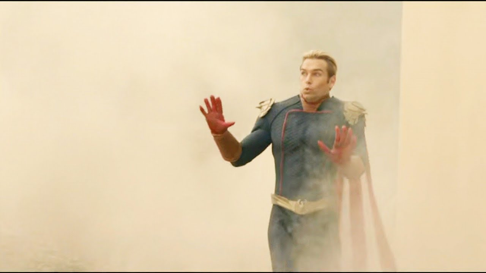

Так, тут саме я!

Вам напевно цікаво, як я тут опинився і що зі мною трапилося.
Так, тут саме я!
Вам напевно цікаво, як я тут опинився і що зі мною трапилося.
Працював я, як конь, на двох роботах.
Вдень я носив ящики, наче герой дешевої відеогри. Уночі сидів в офісі шлюбного агентства, розводячи довірливих чоловіків на гроші.
Дві роботи. Два життя. Дві брехні.
Тоді я повертався додому — коли почув за спиною гуркіт мотора. Потім — світло фар.

Чорна машина без номерів. І з неї вийшли ті, хто знав про мої таємниці...
Чому мені здалося, що вони знають мої таємниці — гадки не маю. Усе, що вони знали напевно — це те, що я сам, що я і щойно зняв готівку в найближчому банкоматі.
Звичайні гопники: забрали б мої гроші — боровся б я чи ні. У мені кіпіли страх і злість, та гроші, як виявилося, їх мало цікавили… Один з них у кілька стрибків дістався мене й щосили вдарив ногою в живіт.
Я не міг дихати, не міг кричати чи благати... Лише, скрутившись, скімлив від болю. «Ось і кінець» — подумав я.

А потім я побачив його — статуру, що випромінювала силу. Він сказав лише одну фразу:
— А не забагато на одного?
Він заступився за мене! Він бив їх, він... наче грався з ними
Кожен рух — холодний і точний.
Він зупинив їх усіх. І не тільки… Він їх усіх повбивав. Кожного. З такою жорстокістю, що мені стало щиро шкода людей, які за мить до того хотіли мене вбити.
Потім він повернувся в мій бік — дивно, але він усміхався, майже сміявся. Мені здалося, він радів, що врятував мене.

Усмішка не гріла. Вона попереджала...
Думка про порятунок зникла миттєво. Він дивився на мене так само, як дивився на них. Потім він пішов на мене...
До речі, на тому фото не я, а те, що я бачив... Той, кого я бачив... востаннє в своєму житті...